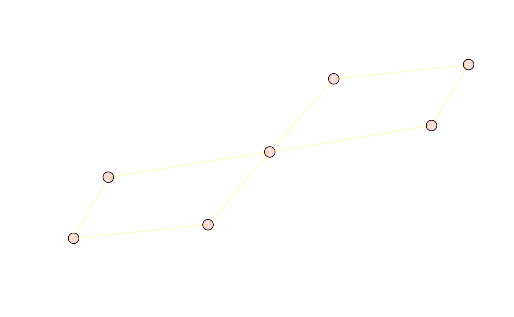
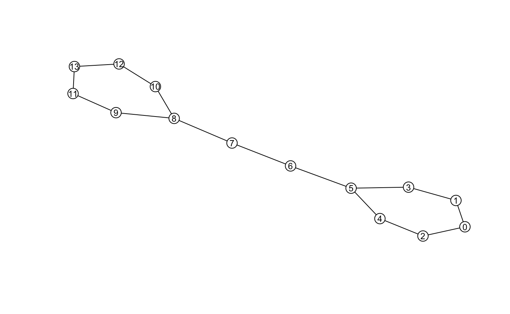
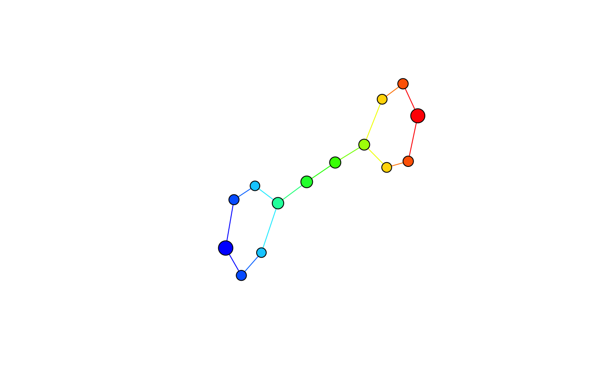

The Mapper package provides an R implementation of the Mapper framework (see 1). The package includes:
Efficient implementations of Mapper components using Rcpp
Practical default filters, covers, and other settings for those unfamiliar with Mapper
Composable API via method chaining
Pre-configured tools for visualizing and interacting with mappers
The package is designed to make modifying or extending the Mapper method simple and efficient, without limiting its generality.
Installation
Install the Mapper package from github as follows:
A CRAN release is planned for the near future.
Getting started
Mapper takes as input a point cloud \(X\) and a reference map \(f : X \to Z\), and returns a topological summary of \(X\) expressed via a cover equipped to the codomain of the map. For example, consider a point cloud sampled from an ‘eight-curve’ in \(\mathbb{R}^2\):
\[g(t) = [\cos(t), \sin(t)\cos(t)],\; t \in \Big(-\frac{1}{2}\pi, \frac{3}{2}\pi\Big)\] In the example below, the data set \(X\) is created from equally spaced samples over \(t\), and the map chosen is simply the \(x\)-coordinate of the shape, i.e. \(f(X) = Z = x_1\).
t <- seq(-0.5*pi, (3/2)*pi, length.out = 100) + runif(100, min=0.01, max = 0.02)
eight <- cbind(x1=cos(t), x2=sin(t)*cos(t))
f_x <- matrix(cos(t))
## View the data along with the mapping
layout(matrix(1:2, nrow = 1))
plot(eight, pch = 20, col = bin_color(f_x), main = expression(X %subset% R^2))
stripchart(f_x, pch = "|", main = expression(f(X) %subset% R))
points(cbind(f_x, 1), pch = "|", col = bin_color(f_x), cex = 2)
Below is a illustrative example of how one may go about constructing a mapper.
m <- MapperRef$new(X = eight)$
use_filter(filter= f_x)$
use_cover(cover = "fixed interval", number_intervals = 5, percent_overlap = 20)$
use_clustering_algorithm(cl = "single")$
construct_k_skeleton(k = 1L)
print(m)
#> Mapper construction with (7, 8) (0, 1)-simplices
#> Fixed Interval Cover: (number intervals = [5], percent overlap = [20]%)There are multiple options one may use to visualize mapper. A default plotting method is available using an igraph determined layout:

For other visualization options, see below.
Customizing Mapper
Almost any component of the Mapper method can be customized.
Want to change the metric? Pass the name of any proximity measure used in the proxy package.
## See ?proxy::pr_DB for more details.
m$use_distance_measure("manhattan") ## This is stored as m$measurePrefer a different linkage criteria to cluster with? Any of the criteria used by hclust can be swapped in.
Or, just replace the clustering algorithm entirely by supplying a function.
## If using a custom metric, just compute the distance matrix
## pid := open set index
## idx := point indices in the preimage of the open set indexed by 'pid'
## self := mapper instance object ('m' in this case)
m$use_clustering_algorithm(cl = function(pid, idx, self){
dist_x <- dist(self$X(idx), method = self$measure)
hc <- hclust(dist_x, method = "average")
eps <- cutoff_first_threshold(hc)
cutree(hc, h = eps)
})If you prefer a different covering, just assign a valid object inheriting from CoverRef.
A list of available covering methods, their correspondings parameters, and their generators can be printed as follows:
covers_available()
#> Typename: Generator: Parameters:
#> fixed interval FixedIntervalCover number_intervals, percent_overlap
#> restrained interval RestrainedIntervalCover number_intervals, percent_overlap
#> ball BallCover epsilonAlternatively, you can create your own cover. See the article on how to make custom cover.
Prior to constructing the simplicial complex, Mapper requires applying the pullback operation. Computationally, the pullback applies the clustering algorithm to subsets of the data given by the cover, which decomposes the data set into connected components. In Mapper, these connected components are represented as vertices. To view which vertices are mapped from the sets in the cover, use the pullback member:
m$construct_pullback()
str(m$pullback)
#> List of 10
#> $ (1) : num 0
#> $ (2) : num [1:2] 1 2
#> $ (3) : num [1:2] 3 4
#> $ (4) : num 5
#> $ (5) : num 6
#> $ (6) : num 7
#> $ (7) : num 8
#> $ (8) : num [1:2] 9 10
#> $ (9) : num [1:2] 11 12
#> $ (10): num 13The vertices are stored are stored as a named list. Each vertex contains a vector of the indices that representing the points that comprise the connected component.
sapply(m$vertices, length)
#> 0 1 2 3 4 5 6 7 8 9 10 11 12 13
#> 25 9 9 7 7 14 15 13 12 7 7 10 10 26Once you’re satisfied with the clustering, you can construct the nerve, the principal output of Mapper. The complex is stored in a Simplex Tree (see 2), which available via the $simplicial_complex member. Initially, the complex is empty:
The maximum dimension of the nerve is up to you. It’s common restrict the mapper to \(1\)-skeleton.

By default, the construct... series of functions enact side-effects and return the instance invisibly, making them suitable to chain. If you want to inspect the result before modifying the instance, pass modify=FALSE. For example, to list the vertices that have a non-empty intersection:
m$construct_nerve(k = 1L, modify = FALSE)
#> [,1] [,2]
#> [1,] 0 1
#> [2,] 0 2
#> [3,] 1 3
#> [4,] 2 4
#> [5,] 3 5
#> [6,] 4 5
#> [7,] 5 6
#> [8,] 6 7
#> [9,] 7 8
#> [10,] 8 9
#> [11,] 8 10
#> [12,] 9 11
#> [13,] 10 12
#> [14,] 11 13
#> [15,] 12 13The \(1\)-skeleton can be exported to any of the usual graph-type data structures.
Visualizing the mapper
To get a quick overview of what the mapper looks like, you can use the default plotting method above given by the simplextree package.
Alternatively, the \(1\)-skeleton can be automatically converted to igraph objects and customized as needed.

For more interactive visualization options, consider the (experimental) pixiplex package.
References
1. Singh, Gurjeet, Facundo Mémoli, and Gunnar E. Carlsson. “Topological methods for the analysis of high dimensional data sets and 3d object recognition.” SPBG. 2007.
2. Boissonnat, Jean-Daniel, and Clément Maria. “The simplex tree: An efficient data structure for general simplicial complexes.” Algorithmica 70.3 (2014): 406-427.